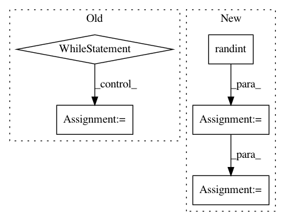

e74fc1410747ac93246cd4545efbc6ede95b94d2,pyemma/coordinates/tests/test_kmeans.py,TestKmeans,test_3gaussian_1d_singletraj,#TestKmeans#,60
Before Change
// test that not-fixed seed yields different results
retry, done = 0, False
while not done and retry < 4:
try:
km3 = cluster_kmeans(X, k=10, init_strategy=init_strategy, fixed_seed=False)
self.assertRaises(AssertionError, np.testing.assert_array_equal,
km1.clustercenters, km3.clustercenters)
done = True
except AssertionError:
retry += 1
self.assertTrue(done, "using a fixed seed compared to a not fixed one made no difference!")
def test_3gaussian_2d_multitraj(self):
// generate 1D data from three gaussians
After Change
"should yield same centers with fixed seed")
// check a user defined seed
seed = random.randint(0, 2**32-1)
km1 = cluster_kmeans(X, k=10, init_strategy=init_strategy, fixed_seed=seed)
km2 = cluster_kmeans(X, k=10, init_strategy=init_strategy, fixed_seed=seed)
self.assertEqual(km1.fixed_seed, km2.fixed_seed)
np.testing.assert_array_equal(km1.clustercenters, km2.clustercenters,
"should yield same centers with fixed seed")
In pattern: SUPERPATTERN
Frequency: 3
Non-data size: 5
Instances
Project Name: markovmodel/PyEMMA
Commit Name: e74fc1410747ac93246cd4545efbc6ede95b94d2
Time: 2017-05-19
Author: m.scherer@fu-berlin.de
File Name: pyemma/coordinates/tests/test_kmeans.py
Class Name: TestKmeans
Method Name: test_3gaussian_1d_singletraj
Project Name: scipy/scipy
Commit Name: 589c372da5e415c4c0c33171971d3b26102b8b3c
Time: 2014-05-29
Author: perimosocordiae@gmail.com
File Name: scipy/sparse/construct.py
Class Name:
Method Name: rand
Project Name: mathics/Mathics
Commit Name: f592ce49086098fe835de68a7ee7bf49967b14ad
Time: 2016-08-22
Author: Bernhard.Liebl@gmx.org
File Name: mathics/algorithm/clusters.py
Class Name:
Method Name: _shuffled_range